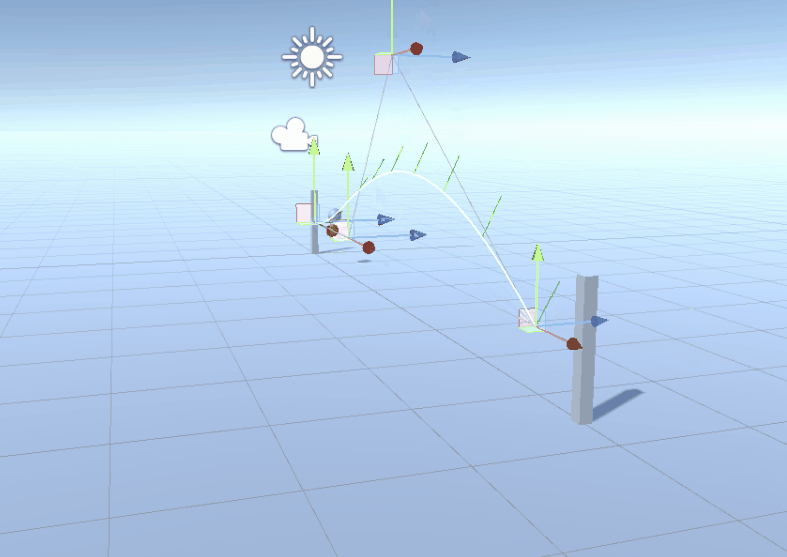
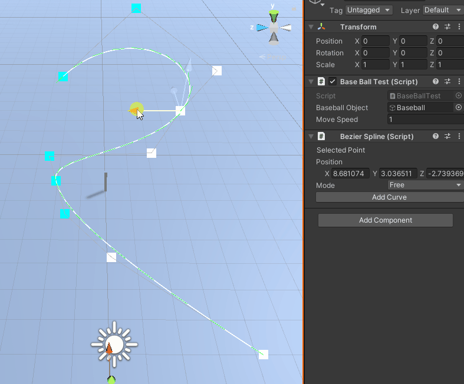
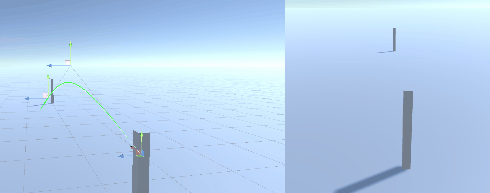

Bezier Curves
I have been interested in learning how to make smoother movement and animations with code and have started learning bezier curves and splines.

I started with making simple bezier curves using Unity's Vector3.lerp function. I made a cubic and quadratic curve quite simply, and found it more efficent. equations. With these equations I learned that the derivatives could be used to find movement direction and acceleration (shown with the direction marked green above). Using this I found a tutorial explaining splines to help create the above spline editor.
This tutorial showed me the great usage of unity editor functions and tools, alongside how they can be made to increase working speeds and clarity of code. The above image shows
some of the code that I made to place unity handles for each spline point.
Using Bezier curves, I am currently developing a small baseball game to allow players to make their own pitches to play against their friends.
